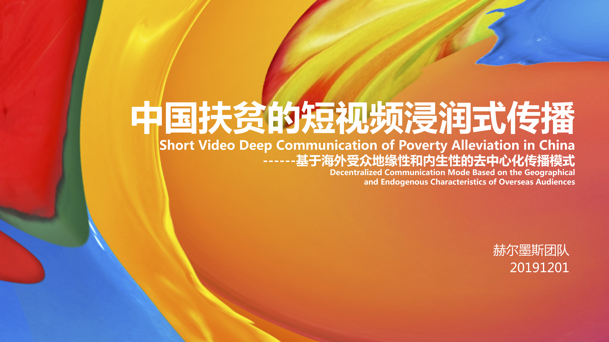
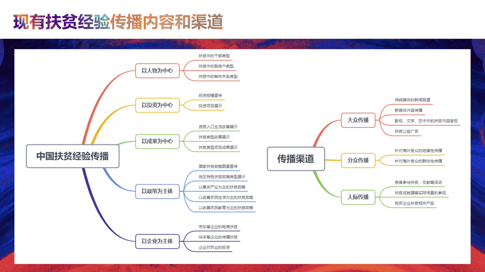
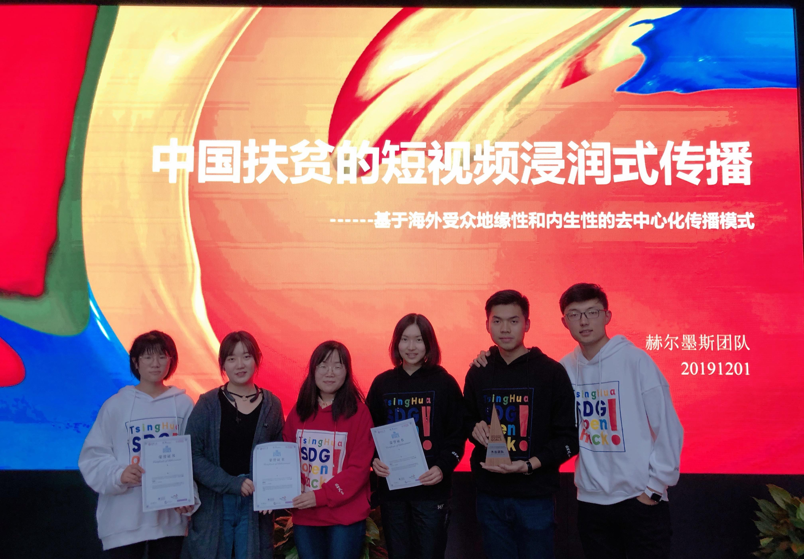

<div id="ajax-page" class="ajax-page-content">
    <div class="ajax-page-wrapper">
        <div class="ajax-page-nav">
            <!--<div class="nav-item ajax-page-prev-next">-->
                <!--<a class="ajax-page-load" href="color.html"><i class="zmdi zmdi-chevron-left"></i></a>-->
                <!--<a class="ajax-page-load" href="color.html"><i class="zmdi zmdi-chevron-right"></i></a>-->
            <!--</div>-->
            <div class="nav-item ajax-page-close-button">
                <a id="ajax-page-close-button" href="#"><i class="zmdi zmdi-close"></i></a>
            </div>
        </div>

        <div class="ajax-page-title">
            <h1>Short Video Deep Communication of Poverty Alleviation in China</h1>
        </div>

        <div class="row">
            <div class="col-sm-7 col-md-7 portfolio-block">
                <div class="owl-carousel portfolio-page-carousel">
                    <div class="item">
                        
                    </div>
                    <div class="item">
                        
                    </div>
                    <div class="item">
                        
                    </div>
                    <div class="item">
                        
                    </div>
                    <div class="item">
                        
                    </div>
                    <div class="item">
                        
                    </div>
                </div>

                <!--<div class="portfolio-page-video embed-responsive embed-responsive-16by9">-->
                  <!--<iframe class="embed-responsive-item" src="https://player.vimeo.com/video/97102654?autoplay=0"></iframe>-->
                <!--</div>-->

                <!--
                <div class="portfolio-page-image">
                    
                </div>
                -->

                <script type="text/javascript">
                    jQuery(document).ready(function($){

                        $('.portfolio-page-carousel').owlCarousel({
                            smartSpeed:1200,
                            items: 1,
                            loop: true,
                            dots: true,
                            nav: true,
                            navText: false,
                            margin: 10
                        });

                    });
                </script>
            </div>

            <div class="col-sm-5 col-md-5 portfolio-block">
                <!-- Project Description -->
                <div class="block-title">
                    <h3>Description</h3>
                </div>
                <ul class="project-general-info">
                    <li><p><i class="fa fa-user"></i>Hermes Group</p></li>
                    <li><p><i class="fa fa-globe"></i>News <a href="http://gt-initiative.org/events/sdg-open-hack/" target="_blank">Geneva Tsinghua Initiative</a>    <a href="https://www.applysquare.com/pages/SDG" target="_blank">ApplySquare</a></p></li>
                    <li><p><i class="fa fa-globe"></i>Introduction <a href="https://mp.weixin.qq.com/s/_8ptCQKzyC30pgLRRII5VA" target="_blank">Hack9</a></p></li>
                    <li><p><i class="fa fa-file-text-o"></i>Our Solution <a href="projects/sdg/pre.pdf" target="_blank">PPT</a> </p></li>
                    <!--<li><p><i class="fa fa-camera"></i><a href="others/hackathon/">Video</a></p></li>-->
                    <li><p><i class="fa fa-calendar"></i>Nov 30th 2019 ~ Dec 1st 2019</p></li>
                </ul>

                <p class="text-justify">SDG Open Hack is a festival of hackathons aimed at tackling key challenges for the SDGs over one weekend. The event aims to launch 13 hackathons (in urban farming, new energy vehicles and mobility, AI for development, pollution sensing, and more), generate 100+ concrete innovations for the SDGs and host up to 500 participants, including students, engineers, professionals, academics, policy makers, impact investors & business angels.</p>
                <p class="text-justify">My team participated in the "Intercultural Communication and Youth Role under UN 2030 Agenda" track. We won the Outstanding Team Award (Champion) and three additional prizes for technology innovation, good presentation, and investable mechanism design.</p>

                <!-- /Project Description -->

                <!-- Technology -->
                <div class="tags-block">
                    <ul class="tags">
                        <li><a>Hackathon</a></li>
                        <li><a>Policy</a></li>
                        <li><a>SDG</a></li>
                        <li><a>Communication</a></li>
                    </ul>
                </div>
                <!-- /Technology -->

                <!-- Share Buttons -->
                <div class="btn-group share-buttons">
                    <div class="block-title">
                        <h3>Share</h3>
                    </div>
                    <a href="https://www.facebook.com/sharer/sharer.php?u=https://shiyinw.github.io/" target="_blank" class="btn"><i class="fa fa-facebook"></i> </a>
                    <a href="http://www.twitter.com/share?url=https://shiyinw.github.io/" target="_blank" class="btn"><i class="fa fa-twitter"></i> </a>
                </div>
                <!-- /Share Buttons -->
            </div>
        </div>
    </div>
</div>
